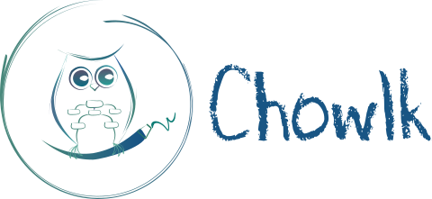

<div class="contenido" [ngClass]="dispositivo">
    <div class="inicio-indicador">
        
        <div class="indicador">
            <div [ngClass]="diff" class="opcion">{{diff}}</div>
        </div>
    </div>
    <div class = "barra-navegacion">
        <a href="https://chowlk.linkeddata.es/index.html" class = "no-seleccionado">Converter</a>
        <a href="https://chowlk.linkeddata.es/notation.html" class = "no-seleccionado">Notation</a>
        <a href="https://chowlk.linkeddata.es/examples.html" class = "no-seleccionado">Examples</a>
        <a href="index.html" class="seleccionado">Tutorial</a>
        <a href="https://chowlk.linkeddata.es/about.html" class = "no-seleccionado">About</a>
        <a href="https://github.com/oeg-upm/Chowlk">
            
        </a>
    </div>
    <mat-icon *ngIf="extendido" class="menu" (click)="expandirTabla()">menu</mat-icon>
</div>
